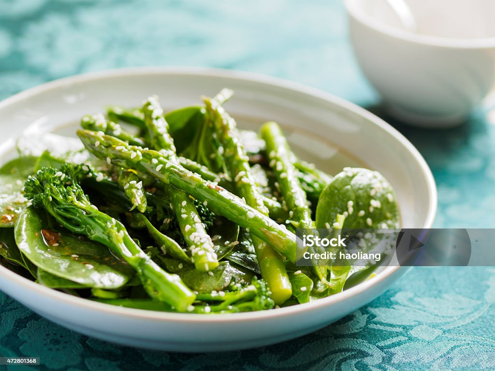

Home
Steamed Asparagus

Description
Steamed asparagus is a quick and healthy side dish that pairs beautifully with almost any meal.
It’s crisp-tender, bright green, and delicious with just a touch of salt or a squeeze of lemon.
This simple method ensures your asparagus is never soggy or bland. A clean, green classic!
Ingredients
- 1 bunch fresh asparagus, ends trimmed
- 1/4 teaspoon salt
- Optional: lemon wedges or a drizzle of olive oil
Steps
- Wash and trim the tough ends of the asparagus stalks.
- Place a steamer basket in a pot with about 1 inch of water.
- Bring the water to a boil over medium-high heat.
- Add the asparagus to the steamer basket and cover with a lid.
- Steam for 4–6 minutes, depending on thickness, until bright green and fork-tender.
- Carefully remove, season with salt, and serve hot with lemon or olive oil if desired.